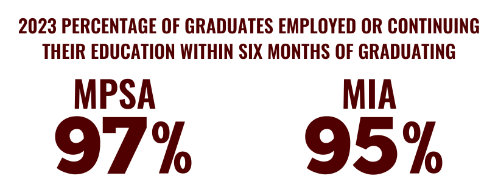

Internships: Furthering Career Goals

Students further career goals while building on their backgrounds, course preparation and interests. See a list of Summer 2024 Internships and Immersions.
Developing Principled Leaders: Employment Stats
Bush School’s career services support students every step of the way. Within six months of graduation, 97% of the 2023 MPSA respondents were employed in a related field or continuing their education. Similarly, 95% of MIA graduates secured employment in their chosen fields. Bush School graduates make an impact in public service at all levels of government and the independent sector. Learn more.
U.S. News & World Report

Meet Our Dean: John Sherman ’92
John B. Sherman ’92 became Dean of the Bush School of Government and Public Service on 1 August, 2024. Prior to this he spent 30 years in national security and intelligence positions in the CIA, Department of Defense, and other agencies where he worked and led activities ranging from overhead reconnaissance to all-source analysis to open-source intelligence. He most recently served in the Presidentially-appointed, Senate-confirmed position as Chief Information Officer of the Department of Defense, where he oversaw technology and cyber modernization for a 4-million person enterprise with a $60B IT and cyber budget. John is a 1992 Distinguish Military Graduate of Texas A&M University where he served as Corps Commander. He also earned a Masters of Public Administration from the University of Houston and he served as an Army Air Defense Officer. He is married to Liz, Class of ’91, who has also served a full career in national security, and they have two grown children who are both professionals in public service. Watch Dean Sherman's welcome video.
Alumni say it best: Meet Krystle
Meet Krystle Beauchamp, Class of 2007 MPSA graduate. Listen to her as she talks about what she loves most about the Bush School and how her experience has prepared her for her career now. Watch here.
.png)
Current Students: Meet Javier
Meet Javier Díaz, a Master of Public Service and Administration student at the Bush School. Javier was inspired by President George H.W. Bush and his grandfather's commitment to public service. He believes in the power of young individuals to enhance government and public services in Mexico Watch here.
.png)